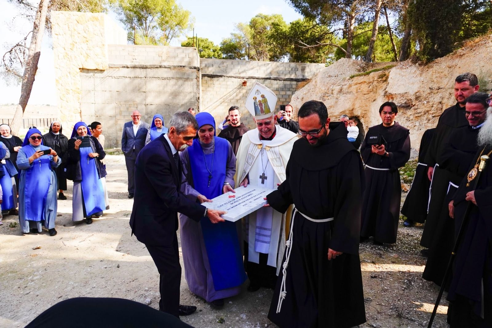

“O jantar é por sua conta 2026”
Como nos anos anteriores, nos propusemos alcançar 1.000 contribuições antes de 31 de dezembro
Ler notíciaÚltima hora
Não há notícias neste idioma.
Como nos anos anteriores, nos propusemos alcançar 1.000 contribuições antes de 31 de dezembro
Ler notícia
Foi lançada a pedra fundamental da capela do Bom Pastor em memória do papa Francisco
Ler notícia


Revista Tierra Santa
A Revista Tierra Santa pertence aos franciscanos da Ordem dos Frades Menores, mais precisamente à Custódia da Terra Santa na Espanha (Centro da Terra Santa). Seu objetivo principal é ajudar a Terra Santa. Outros objetivos são dar a conhecer a Terra de Jesus por meio da revista, da edição de obras que divulguem todos os aspectos daquela Terra e da formação bíblica, teológica, histórica e arqueológica por meio de cursos, conferências e jornadas que permitam aos participantes aprofundar o conhecimento de tudo o que se relaciona com a figura de Nosso Senhor e com a Terra em que Ele se encarnou e viveu até a sua Ressurreição.
A revista Tierra Santa, publicada a cada dois meses, é o meio que permite dar a conhecer em língua espanhola o espírito franciscano da Terra Santa, oferecendo informações atuais, históricas, arqueológicas e bíblicas sobre os Lugares Santos.


Responsável pela Revista
Sacerdote franciscano da diocese de Madri. Estudou Teologia na Faculdade de Teologia do Norte da Espanha (Burgos), obteve a Licenciatura em Teologia Dogmática na Universidade Pontifícia de Salamanca, o Doutorado em Teologia Dogmática pela Universidade Eclesiástica San Dámaso (Madri) e a Licenciatura em Teologia Fundamental pelo Instituto Teológico de Múrcia (Pontifícia Universidade Antonianum), além de outros estudos em Jerusalém (exegese e arqueologia) e Madri (vida consagrada).
Atualmente é professor na Universidade Eclesiástica San Dámaso e no Instituto Teológico de Múrcia, além de Presidente dos Comissários da Terra Santa na Espanha e em Portugal e Representante legal do Custódio da Terra Santa na Espanha.

Diretora
Formada em Jornalismo, diplomada em Altos Estudos Internacionais, com amplo conhecimento de Community Manager e Social Media. Tem mais de 15 anos de experiência em diferentes cargos de comunicação, tanto em multinacionais como a Repsol quanto em instituições como o Ministério da Defesa, em entidades privadas como o Instituto de Seguridad Global ou em fundações como a CODESPA.
Também trabalhou como professora de Comunicação na Universidade Complutense de Madri e colaborou escrevendo artigos em diversas revistas especializadas.

Conselho editorial
Doutora em Teologia pela Universidade Eclesiástica San Dámaso (Madri), onde é professora adjunta, e professora associada da Faculdade de Literatura Cristã e Clássica – San Justino (UESD). Linhas de pesquisa: Arqueologia Bíblica, Iconografia comparada, estudos bíblicos, judaísmo e suas línguas. Professora de aramaico e hebraico, é também professora convidada da Universidade Francisco de Vitoria, com a disciplina História das Civilizações.
Tem longa experiência em Arqueologia: desde 1996 é arqueóloga em Tel Hazor (Galileia, Israel) e desde 2012 na Cidade de Davi, em Jerusalém. Colaboradora da National Geographic España e de outras revistas científicas.
Secretária
María José Villegas Villena nasceu em Madri, é casada e mãe de seis filhos. Formou-se em Psicologia, com especialização em Psicologia do Desenvolvimento, pela Universidade Complutense de Madri. Membro do Caminho Neocatecumenal, do qual recebeu seu amor pela Igreja e pela Terra Santa como fonte da Fé de onde brotam as raízes do cristianismo. Peregrinou muitas vezes a Israel desde 1999, descobrindo que é o lugar que Deus escolheu para se fazer carne e salvar os homens.
Hemeroteca · Desde 1921
819 revistas · 1921 – 2025
Todas as revistas desde 1921, grátis e completas
Escolha por onde começar.
Deslize para explorar
ou use as setas ← →
Assinaturas
Assinatura como doador Amigo, 50 € / ano.
Com esta assinatura você entra diretamente no sorteio anual de viagens à Terra Santa.
AssinarAssinatura como doador Benfeitor, 80 € / ano.
Com esta assinatura você entra diretamente no sorteio anual de viagens à Terra Santa.
AssinarAssinatura comum, 30 € / ano. Também em PDF: 20 € / ano.
Você pode participar do sorteio anual de viagens à Terra Santa (+12,00 €).
AssinarAssinatura como doador Protetor, 150 € / ano.
Com esta assinatura você entra diretamente no sorteio anual de viagens à Terra Santa.
Assinar